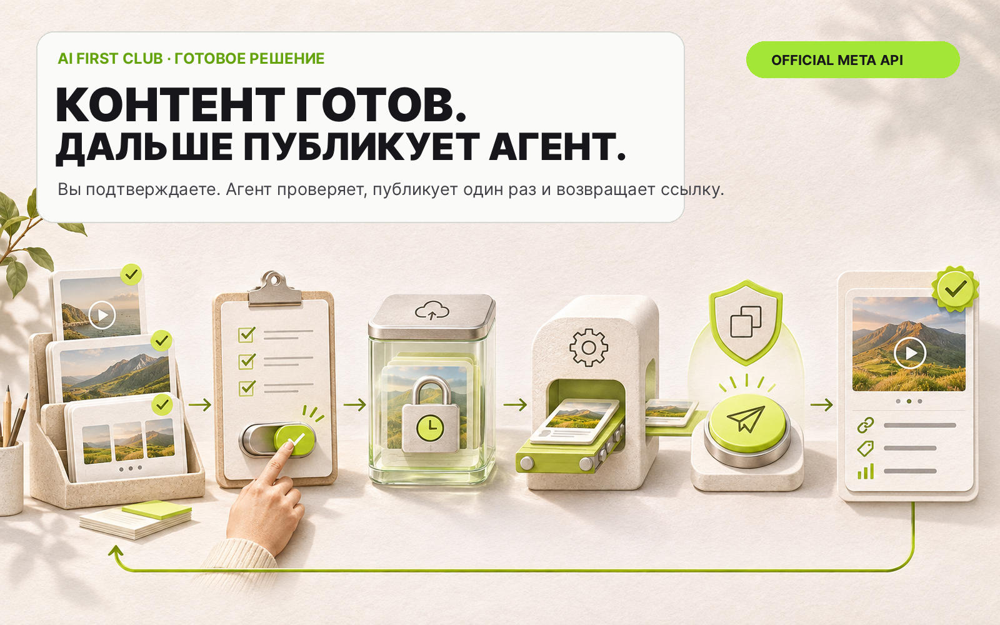

Сейчас: много ручных точек
- Открыть нужный аккаунт.
- Загрузить файл и обложку.
- Вставить подпись и флаги.
- Выбрать обычный или Trial Reel.
- Дождаться обработки.
- Проверить, что публикация действительно вышла.
- Сохранить ссылку и результат.
Instagram API · браузерный гайд
Вы один раз настраиваете официальный доступ Meta. Потом перед каждым запуском сверяете аккаунт, файл, подпись и режим. Агент берёт на себя техническую цепочку, публикует один раз и возвращает проверенную ссылку.

Владелец сохраняет последнее слово перед каждой публикацией.
Если ответ потерялся, агент сначала выясняет, вышел ли материал.
Токен живёт на сервере, а не в промпте, JSON или журнале.
Главный выигрыш не в том, что человек исчезает из процесса. Исчезает повторяемая ручная цепочка: загрузить, дождаться, проверить режим, не нажать второй раз, открыть пост и собрать отчёт.
approval_hash.Это не россыпь скриптов. Это одна последовательность с понятными остановками. До подтверждения владельца никаких контейнеров и публикаций.
Аккаунт, формат, размер, кодек, подпись, лимиты.
Файлы и настройки замораживаются в одном hash.
Владелец сверяет карточку и говорит точное «да».
Один контейнер, ожидание FINISHED, один publish.
Media ID, permalink, username, тип, время и отчёт.
Официальный Content Publishing API поддерживает изображения, видео, Reels и карусели для профессиональных аккаунтов. Конкретные права и доступность Trial всё равно проверяются на вашем приложении и аккаунте.1
01 · REELS
Агент проверяет MP4/MOV, H.264 или HEVC, AAC, FPS, длительность, положение moov, обложку и подпись. Затем ждёт готовности контейнера.
02 · TRIAL
Режим и стратегия фиксируются в плане. Если trial_params не принят, задача останавливается: выпускать вместо него обычный Reel нельзя.2
03 · CAROUSEL
Каждый элемент получает дочерний контейнер, затем собирается один верхний контейнер. В документации Meta сейчас расходится максимум элементов, поэтому число проверяется на целевой версии API до боевого запуска.
04 · QUEUE
Расписание хранится на вашем сервере. В назначенный момент worker заново проверяет файл, hash, аккаунт и лимит, а не отправляет старый запрос вслепую.
У Meta есть несколько маршрутов. Токен, host и permissions одного маршрута нельзя смешивать с другим. Для новой интеграции официальная документация рекомендует сначала проверить Unified Login.3
Новый маршрут для входа через Instagram или Facebook. Связанная Facebook Page не обязательна, но business portfolio и корректная конфигурация приложения всё равно нужны.
Работает через graph.instagram.com и своё семейство разрешений. Его long-lived token нельзя автоматически считать токеном другого маршрута.
Подходит существующим интеграциям, где Instagram professional account связан с Facebook Page и уже выстроена соответствующая схема assets и permissions.
Сначала определите схему входа. Потом фиксируйте API host, version, token type и permissions. Ошибка «вроде все права есть» часто означает, что собраны части разных схем.
Если часть ответов неизвестна, это не повод угадывать. Отметьте пробел, проверьте его через API или Meta Business settings и только потом переходите к плану.
Starter pack не публикует во время установки и тестов. Сначала он проверяет локальный файл, собирает план и показывает, что именно будет запущено.
python instagram_publish_agent.py check \ --config config.json python instagram_publish_agent.py plan \ --config config.json \ --output approval-plan.json
Карточка владельцу
Изменился хоть один пункт — нужен новый план и новое подтверждение.
Автоматизация остаётся управляемой, когда зона владельца и зона агента не смешаны.
| Владелец | Агент | Что возвращается |
|---|---|---|
| Выбирает аккаунт, материал и время. | Читает account ID/@username и проверяет готовность. | Список пробелов или PASS. |
| Утверждает файл, подпись, режим и AI disclosure. | Считает SHA-256 и собирает неизменяемый план. | Карточка с approval_hash. |
| Подтверждает точный hash. | Создаёт один контейнер, ждёт FINISHED, публикует один раз. | Media ID и результат запроса. |
| Не вмешивается в технический retry. | При неизвестном ответе сверяет тот же контейнер и последние media. | Verified permalink или запрос ручной проверки. |
Самая дорогая ошибка здесь выглядит невинно: запрос завис, кто-то нажал ещё раз, а через минуту в аккаунте уже две одинаковые публикации.
После начала media_publish любой таймаут считается неизвестным результатом, а не разрешением повторить запрос. Агент сначала сверяет container ID, последние media, время, username и подпись.
share_to_feed и AI-generated flag.PUBLISHED или RECONCILE_REQUIRED второй publish запрещён.Текущие официальные страницы Meta противоречат друг другу. Хорошая система не выбирает удобную цифру, а читает runtime limit и проверяет целевую версию API.
ПУБЛИКАЦИИ / 24 ЧАСА
Перед запуском агент читает content_publishing_limit и оставляет резерв. Hard-coded лимит запрещён.5
ЭЛЕМЕНТЫ КАРУСЕЛИ
Фактический предел проверяется на целевом account/API version до production. Нельзя тихо урезать утверждённую карусель.
Официальный API снимает рутину, но не превращает неподготовленный аккаунт в готовую интеграцию.
Нужен профессиональный Business или Creator account.
Свой аккаунт и продукт для нескольких чужих бизнесов — разные уровни доступа.
Тогда нужен другой поддерживаемый upload route. Локальный путь на вашем компьютере не подойдёт.
Не стоит выдавать браузерную имитацию кликов за официальный API и обещать одинаковую надёжность.
AGENT-READY STARTER PACK
Внутри: мастер-промпт, опрос готовности, guarded reference CLI, тесты, state machine, карта ошибок, ожидаемые результаты, финальный QA и официальный source ledger.
Главный маршрут выше рассчитан на владельца. Детали ниже нужны агенту и разработчику, когда они подключают конкретное приложение.
IN_PROGRESS → FINISHED либо останавливается в ERROR/EXPIRED. Контейнер не равен готовой публикации. Официальная документация указывает срок жизни 24 часа.4Проверено 13 ноября 2026 года. Для текущих платформенных утверждений использовалась только официальная документация Meta; локальные снимки и SHA-256 сохранены в проекте.